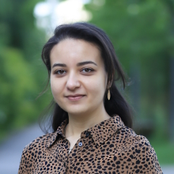

Fairouz Grioui, M.Sc.

My research focuses on the study of small-scale visualizations on wearable devices along with interaction techniques for mobile contexts.
I completed my Master’s degree in Human-Computer Interaction at the University of Paris-Saclay in France. Currently, I am pursuing my Ph.D. at the University of Stuttgart. In my previous work I explored micro visualization reading under locomotion such as while walking and jogging or playing a tennis-like game in VR), and in motion to assist patients with (wrist rehabilitation exercises at home).
Research Interests
- Micro Visualization
- Mobile Visualization
- Information Visualization
- HCI
- AR/VR